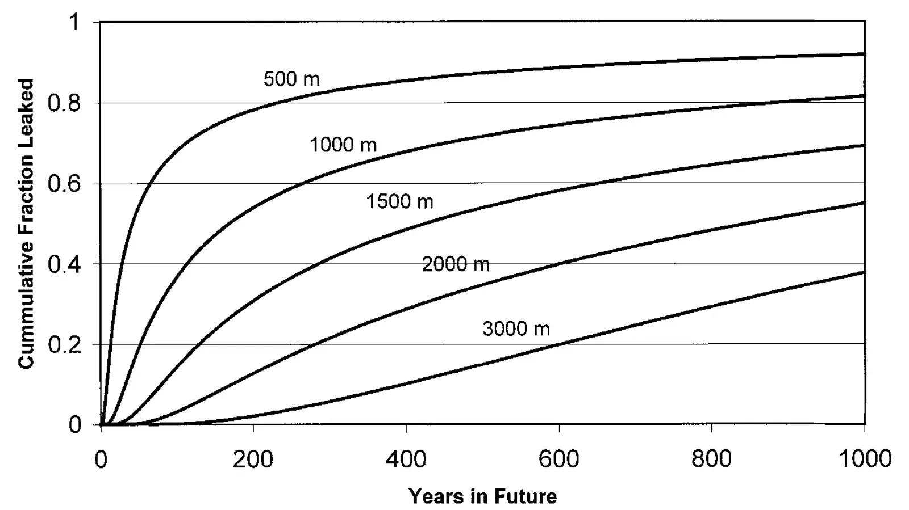

An Issue of Permanence: Assessing the Effectiveness of Temporary Carbon Storage
Key finding. Defining sequestration effectiveness as the discounted benefit of temporary storage relative to permanent storage makes the answer depend on the carbon price path — for ocean injection at 1,500 metres and a 3% discount rate, effectiveness is 97.2% if carbon prices stay constant, 79.7% if they rise at the discount rate for 100 years before a backstop technology caps them, and exactly 0% if they rise at the discount rate indefinitely.

What question did this research address?
Carbon put into trees, soils, geologic formations, or the ocean may come back out. That has driven a long argument over how much credit temporary storage deserves, usually settled by ton-year accounting — treat storage beyond some horizon, conventionally 100 years, as permanent and discount anything shorter.
The peculiarity of that convention is that the answer is entirely determined by the horizon chosen, and nothing connects the choice of horizon to any underlying economics. This paper asked whether the value of temporary storage can be derived rather than stipulated.
The framing also cuts the other way. Emissions avoided today are conventionally treated as avoided forever, but unburned fossil fuel can be mined and burned later — absent a binding cumulative cap, cheaper resources left in the ground raise future emissions. Permanence is therefore an issue for nearly every mitigation option, not only for leaky reservoirs.
What did we find?
Sequestration effectiveness is defined as the ratio of the discounted benefit of storing carbon in a leaky reservoir to the benefit of storing it permanently. The absolute level of the carbon price cancels out of that ratio, so the result turns on the shape of the price path rather than on any view about how high carbon prices ought to be.
Three price paths bracket the possibilities. Constant prices correspond to constant marginal damages; prices rising at the discount rate correspond to efficient allocation under a fixed cumulative emissions cap with no backstop; and rising prices that flatten after t* years correspond to a backstop technology arriving at that date.
Leakage rates came from a one-dimensional box-diffusion ocean model, tuned to bomb radiocarbon inventories, for carbon dioxide injected at 500, 1,000, 1,500, 2,000, and 3,000 metres.
Under constant carbon prices, delay is genuinely worth something and depth buys almost everything. Effectiveness at a 3% discount rate is 66.3% at 500 metres, 97.2% at 1,500 metres, and 99.96% at 3,000 metres — deep ocean storage is then all but equivalent to permanent storage.
Under prices rising at the discount rate with no backstop, effectiveness is 0% at every depth. If a ton emitted a thousand years from now costs the same in present value as a ton emitted today, delay buys nothing and permanence becomes a necessary criterion.
The intermediate case, probably the most realistic, makes the answer a race between leakage and innovation. At 3,000 metres only 5% leaks in the first 280 years, so effectiveness stays high even for a backstop 200 years away; at 500 metres 5% has leaked within 5 years, so effectiveness is poor even for a backstop 20 years away.
Optimal injection depth therefore follows from the price path rather than from the physics alone — about 1,500 metres under constant prices or a backstop within 20 years, at least 2,000 metres for a backstop at 100 years, and 3,000 metres for one at 200 years. The conventional advice to inject as deep as possible is not robust.
Raising the discount rate above 3% changes little, but lowering it matters a great deal. At a zero discount rate, sequestration effectiveness goes to zero in every case.
Why does it matter?
It replaces an arbitrary convention with an explicit economic calculation. Ton-year accounting hides its assumptions in the choice of a horizon; this framework puts them in the open as a carbon price path and a discount rate, where they can be argued about directly.
It shows why the permanence debate persists. Reasonable people reach opposite conclusions about leaky storage because they hold different implicit views about whether the world faces a fixed cumulative emissions budget or a stream of marginal damages, and those views imply effectiveness figures of 0% and 97% for the same reservoir.
The point that avoided emissions are themselves impermanent widens the argument beyond sequestration. If fossil fuel left unburned today is burned later, then energy efficiency and fuel switching also leak into the future, and the sharp distinction usually drawn between them and storage is harder to sustain.
Effectiveness is only half of any decision. An option that is 50% effective is still the better buy if it costs less than half as much per tonne — the paper supplies the benefit side of that comparison and leaves the cost side out.
Citation, data, and code
Howard Herzog, Ken Caldeira, and John Reilly (2003). An Issue of Permanence: Assessing the Effectiveness of Temporary Carbon Storage. Climatic Change 59, 293-310.
Related
- How long does a carbon dioxide emission go on warming the planet?
- If cutting emissions pays for itself, why is it so hard to do?
- The role of the Southern Ocean in uptake and storage of anthropogenic carbon dioxide (Caldeira and Duffy, 2000)
- Insensitivity of global warming potentials to carbon dioxide emission scenarios (Caldeira and Kasting, 1993)